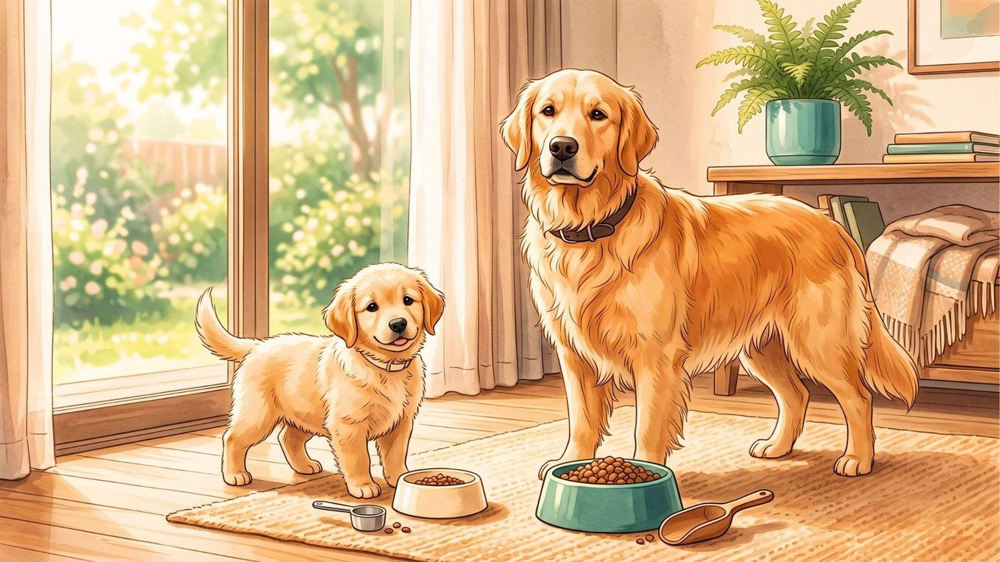
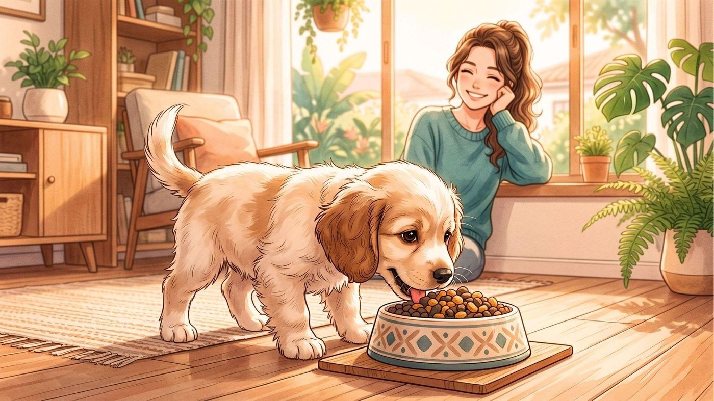
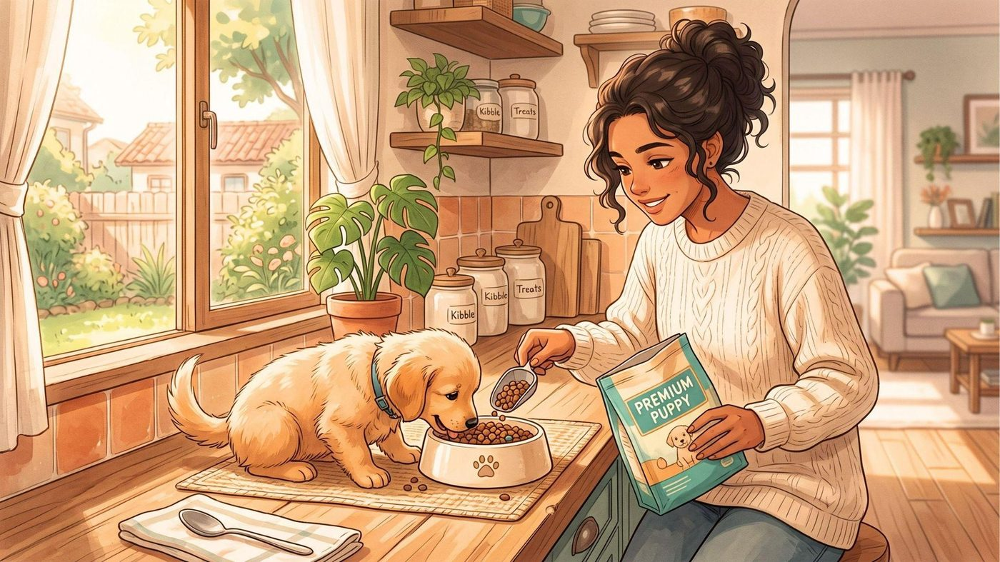
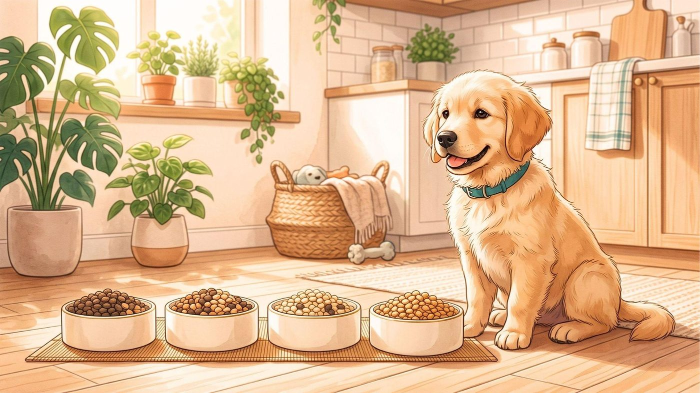
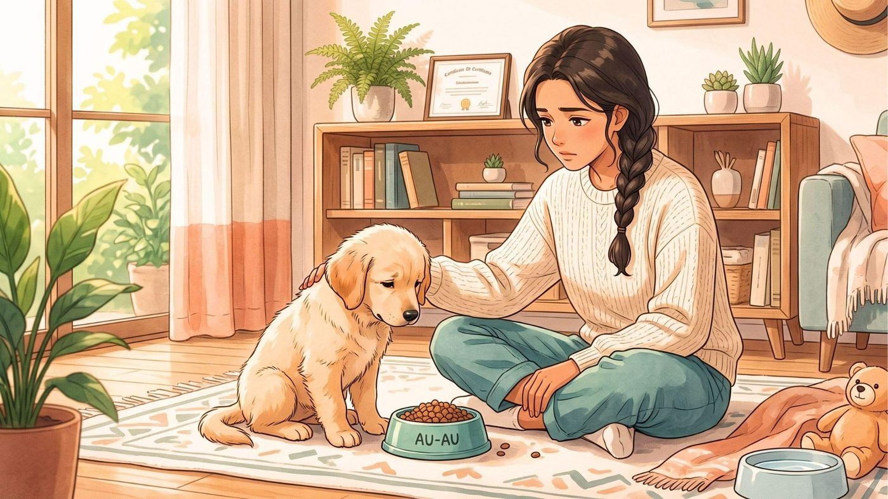
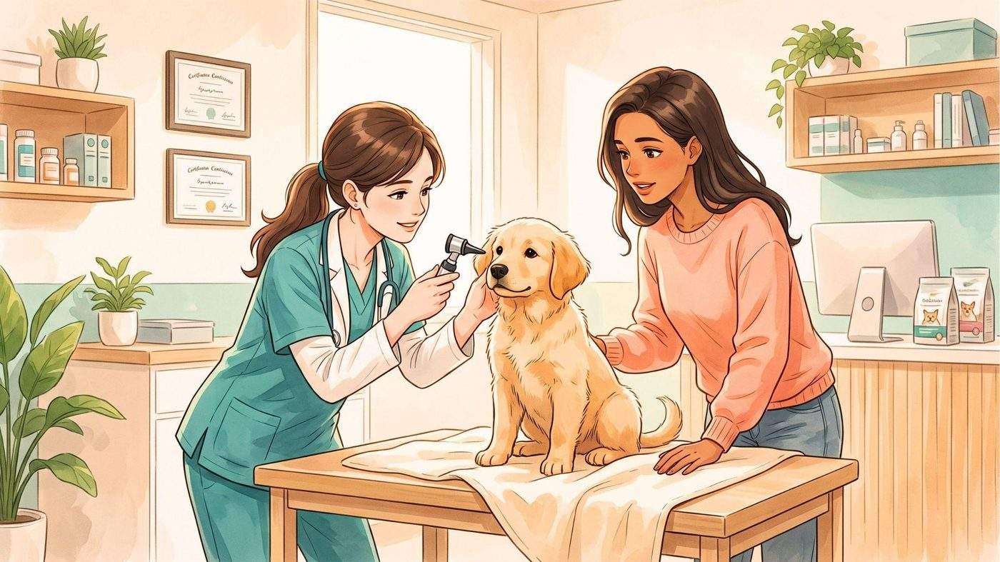
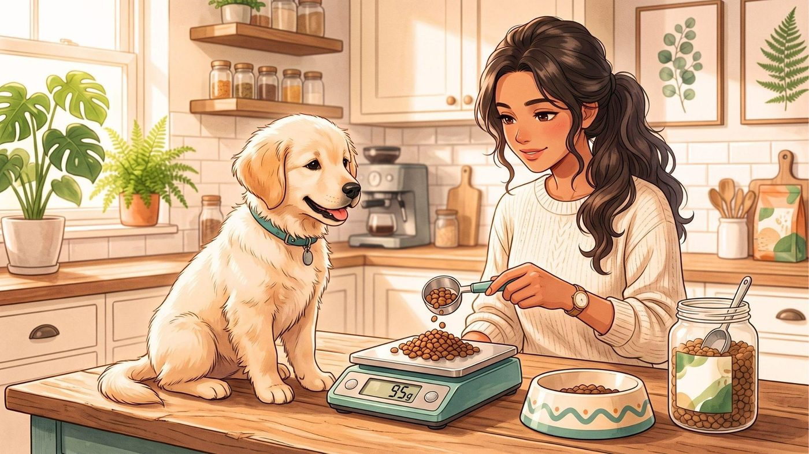

"Meu filhote adorava a ração antiga. Troquei por uma que parecia melhor… e no dia seguinte veio a diarreia."
Se isso já aconteceu com você, saiba que você não está sozinho.
Quando decidimos mudar a alimentação de um filhote, é tentador simplesmente colocar a nova ração no pote e esperar que ele aceite. Afinal, se as duas são feitas para cães, qual seria o problema?
O problema é que o sistema digestivo de um filhote ainda está em desenvolvimento e pode reagir mal a mudanças bruscas na alimentação. Uma troca repentina pode causar fezes moles, gases, vômitos ou até fazer o cachorro rejeitar a nova comida.
Por isso, se eu estivesse fazendo essa mudança para um filhote saudável, minha primeira regra seria simples: eu não teria pressa.
A transição gradual permite que o organismo se adapte ao novo alimento e também me dá a oportunidade de perceber rapidamente se algo não está funcionando.
Antes de trocar a ração, eu faria uma coisa
Eu descobriria exatamente qual ração o filhote está comendo atualmente.
Se ele acabou de chegar à minha casa, por exemplo, eu evitaria mudar tudo no primeiro dia só porque quero oferecer uma ração que considero melhor. Se possível, manteria inicialmente a alimentação à qual ele já está acostumado e faria a mudança depois, com calma.
Isso é especialmente importante porque a chegada a uma nova casa já representa uma grande mudança na rotina do filhote. Novo ambiente, novas pessoas, novos cheiros, novos horários e, muitas vezes, separação da mãe e dos irmãos. Eu não acrescentaria uma mudança brusca de alimentação a tudo isso sem necessidade.
Além disso, antes de escolher a nova ração, eu verificaria se ela é adequada para a fase de crescimento do filhote. A quantidade e o tipo de alimento precisam considerar idade, porte, condição corporal e necessidades individuais.
Por que não devo trocar a ração de uma vez?

Imagine que eu esteja acostumado a comer praticamente a mesma coisa todos os dias e, de repente, mude completamente os ingredientes, textura e composição das minhas refeições. Com um filhote, a mudança também pode ser percebida pelo sistema digestivo.
Uma alteração abrupta na dieta pode provocar vômitos, diarreia e gases, especialmente em animais mais sensíveis. Por isso, organizações veterinárias recomendam que a mudança seja feita gradualmente.
E existe outro detalhe que considero importante: o filhote precisa aceitar a nova comida. Não adianta escolher uma ração nutricionalmente adequada se ele simplesmente não quer comê-la.
Durante a transição, eu observo duas coisas:
- Como estão as fezes
- Como está o apetite e o comportamento do filhote
Se os dois continuam normais, avanço lentamente.
Como eu faria a transição da ração em 7 dias
Uma estratégia prática é aumentar progressivamente a quantidade da nova ração enquanto reduzo a antiga. Uma referência utilizada para filhotes é esta:
Dias 1 e 2 — começo devagar
Eu começaria com aproximadamente 75% da ração antiga e 25% da nova.
Nesse momento, meu objetivo não seria acelerar a troca. Eu observaria o filhote. Ele come normalmente? As fezes continuam firmes? Está brincando e se comportando como de costume?
Se tudo estiver bem, sigo para a próxima etapa.
Dias 3 e 4 — metade de cada

Agora eu passaria para aproximadamente 50% da ração antiga e 50% da nova.
Essa etapa é importante porque a quantidade da nova alimentação já aumentou bastante. Se o filhote continuar com bom apetite e sem alterações digestivas importantes, posso continuar.
Dias 5 e 6 — predominância da nova
Nesse momento, eu passaria para aproximadamente 75% da nova ração e 25% da antiga. A essa altura, o organismo já teve vários dias para se adaptar aos novos ingredientes.
Dia 7 — nova ração

Se tudo estiver correndo bem, posso chegar a 100% da nova ração.
Mas existe uma coisa importante: sete dias não é uma regra que precisa ser cumprida a qualquer custo. Alguns cães precisam de mais tempo.
A WSAVA (Associação Mundial de Veterinária de Pequenos Animais) recomenda que mudanças alimentares sejam feitas gradualmente e observa que, dependendo do animal, uma transição de 7 a 10 dias ou até mais pode ser apropriada. Se meu filhote for sensível, eu simplesmente diminuiria o ritmo.
E se meu filhote tiver diarreia durante a transição?
Essa é provavelmente a situação que mais assusta os tutores.
Se as fezes ficarem mais moles depois de aumentar a quantidade da nova ração, eu não continuaria aumentando a nova comida como se nada tivesse acontecido. Eu voltaria para a proporção anterior que ele tolerava bem e faria a transição mais lentamente.
Por exemplo: se ele estava bem com 50% de cada ração, mas apresentou fezes moles quando passei para 75% da nova, eu poderia retornar temporariamente à proporção anterior e observar. A ideia é dar mais tempo para adaptação.
Mas aqui existe uma diferença fundamental: diarreia em filhote não deve ser automaticamente atribuída à troca de ração. Filhotes podem apresentar problemas gastrointestinais por diversas razões, incluindo parasitas, ingestão de objetos, alimentos inadequados, infecções e outras condições.
Por isso, se a diarreia persistir, piorar ou vier acompanhada de outros sintomas, eu procuraria um veterinário.
Quais sinais fariam você parar a transição?
Eu ficaria especialmente atento se o filhote apresentasse:
- Vômitos
- Diarreia persistente
- Perda ou redução importante do apetite
- Sangue nas fezes
- Apatia ou fraqueza
- Dor aparente
- Desidratação
- Piora rápida do estado geral
Em filhotes, eu teria ainda mais cuidado porque eles podem se desidratar rapidamente. Se houver vômitos, sangue nas fezes, falta de apetite ou letargia, a recomendação é procurar orientação veterinária imediatamente. Eu não tentaria tratar esses sintomas em casa simplesmente interrompendo a ração ou oferecendo medicamentos humanos.
Preciso escolher uma ração diferente porque meu filhote está crescendo?

Aqui existe uma confusão bastante comum. Ração para filhotes não é simplesmente uma versão "menor" da ração para adultos.
Durante o crescimento, o cachorro possui necessidades nutricionais específicas. A alimentação precisa ser adequada à fase de vida e, dependendo do caso, ao porte do animal.
Por isso, antes de fazer uma mudança importante, eu verificaria se a nova ração realmente é indicada para crescimento de cães e se atende às necessidades daquele filhote.
Em cães de porte grande, por exemplo, o controle da quantidade e da velocidade de crescimento merece atenção especial. A WSAVA destaca que filhotes de raças grandes não devem ser alimentados de maneira que favoreça um crescimento excessivamente rápido.
Se eu tivesse dúvidas sobre qual alimento escolher, conversaria com o veterinário antes de fazer a troca.
E quanto à quantidade de ração?
Esse é outro ponto em que eu teria cuidado.
Quando troco a marca ou fórmula, não assumiria automaticamente que a mesma quantidade em gramas continua correta. A densidade calórica e as recomendações de alimentação podem ser diferentes entre produtos.
Por isso, eu começaria consultando a orientação de alimentação indicada na embalagem da nova ração e, quando necessário, confirmaria a quantidade adequada com o veterinário.
Também evitaria deixar uma quantidade ilimitada de comida disponível simplesmente porque o filhote parece estar sempre com fome. Filhotes normalmente fazem refeições menores e mais frequentes, e a quantidade precisa acompanhar seu crescimento e condição corporal.
Posso misturar as duas rações no mesmo pote?
Sim.
Para cães, a mistura gradual das duas rações é uma estratégia bastante utilizada durante a transição. A WSAVA inclusive apresenta a mistura no mesmo recipiente como uma opção.
Eu só manteria as proporções planejadas. Não faria algo como: "vou colocar um pouco da nova e ver no que dá." Quanto mais previsível for a mudança, mais fácil será identificar o que causou qualquer alteração.
Também manteria água fresca disponível o tempo todo. A disponibilidade de água limpa é uma recomendação básica de bem-estar animal.
E se meu filhote simplesmente não gostar da nova ração?

Isso pode acontecer.
Às vezes escolhemos uma ração pensando que o cachorro vai adorar e ele olha para o pote como se estivéssemos oferecendo uma pedra.
Nesse caso, eu não tentaria compensar imediatamente com vários petiscos, comida da mesa ou outros alimentos. Primeiro, observaria se ele está saudável e se existe alguma razão para a recusa. Também evitaria transformar cada refeição em uma sequência de "substitutos" até encontrar algo que ele aceite.
Se a recusa persistir, especialmente em um filhote, eu conversaria com o veterinário para avaliar a situação e decidir se outra formulação seria mais apropriada.
A melhor transição é a que o filhote tolera

Se eu pudesse resumir tudo em uma única ideia, seria esta: não trate os sete dias como uma corrida.
O objetivo não é chegar à nova ração no sétimo dia. O objetivo é chegar à nova alimentação sem causar desconforto e garantindo que o filhote continue comendo adequadamente.
Se ele está bem com 50% da nova ração, mas apresenta alterações quando chego a 75%, eu desacelero. Se necessário, faço a transição em 10, 14 dias ou até mais, especialmente se houver histórico de sensibilidade digestiva. Fontes veterinárias recomendam períodos mais longos quando o animal apresenta problemas durante a mudança.
E se houver vômitos, diarreia persistente, recusa alimentar ou qualquer alteração preocupante, eu paro de tentar resolver sozinho e procuro orientação veterinária.
A alimentação do meu filhote não precisa mudar de um dia para o outro. Com planejamento, observação e um pouco de paciência, a troca pode ser muito mais tranquila — para ele e para quem vai ficar responsável por limpar o chão se alguma coisa der errado.

Importante: este artigo tem finalidade educativa e não substitui uma avaliação individual feita por um médico-veterinário. Filhotes com vômitos, diarreia persistente, sangue nas fezes, falta de apetite, apatia ou outros sinais de doença devem receber orientação veterinária.